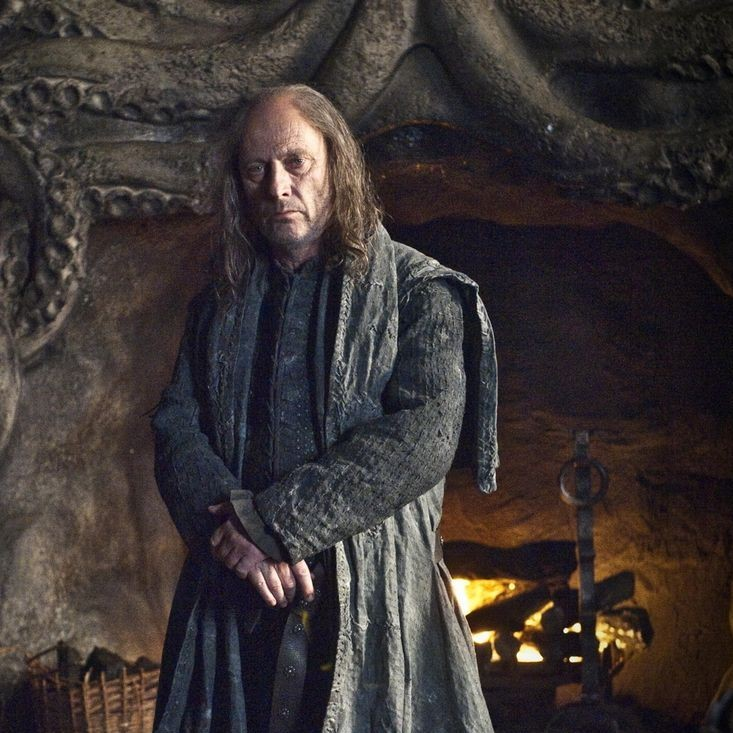
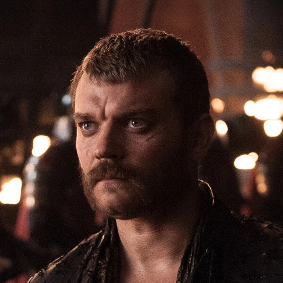
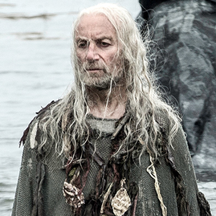

GoTidien
L'actu 100% Game of Thrones, quotidiennement!


L'actu 100% Game of Thrones, quotidiennement!
| IMAGE | PRENOM ET NOM | NAISSANCE | LIENS DE PARENTES | TITRES | MORT |
|---|---|---|---|---|---|
|  | Balon Greyjoy | / | Père de Yara et Theon Greyjoy Frère de Euron et Aeron Greyjoy |
Seigneur des îles de Fer (avant) Roi des îles de Fer et du Nord Roi du Sel et du Roc |
Tué par son frère (Euron) |
|  | Euron Greyjoy | / | Frère de Aeron et Balon Greyjoy | Fils du Vent de Mer Roi des îles de Fer Roi du Sel et du Roc |
Tué à l'épée par Jaime Lannister |
|  | Aeron Greyjoy | / | Frère de Euron et Balon Greyjoy | / | NON |
| Theon Greyjoy | - an 281 - | Fils de Balon Greyjoy Frère de Yara Greyjoy |
Prince de Winterfell (avant) Prince des îles de Fer |
- 24 ans - Empalé par le Roi de la Nuit |
|
| Yara Greyjoy | / | Fille de Balon Greyjoy Soeur de Theon Greyjoy |
Reine des Îles de Fer Reine du Sel et du Roc Fille du Vent de Mer |
NON |